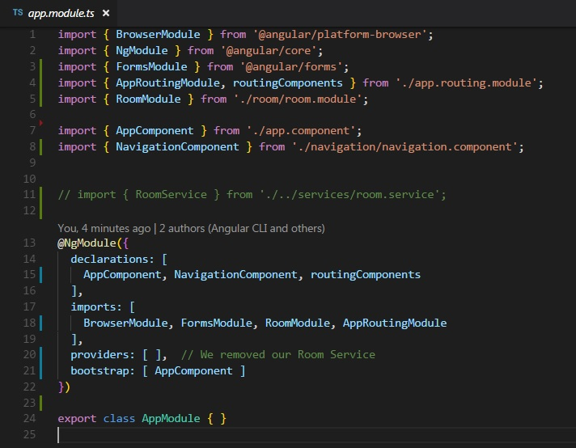

In addition to creating routing modules, it is also very common practice for individual features to get their own module. It holds all the components it will use, any child routes, and any other things we need to bring in. Then we simply import that module into our app.module.
Our room component is the perfect candidate for this. It will contain a form component to enter new reservations, and a list to display all the current reservations for each room. It's also going to need child routes to navigate to both that room and list. So let's get started.
Create a file inside the room folder called room.module.ts. Since we're going to be putting everything room related in its own module, we need to remove everything room related that is anywhere else. Before we do that, we're going to need one more file to create. This room module is going to have its own child routes, so it will need its own routing module. Create a file named room.routing.module.ts inside your room folder.
Now we're are going to be adding and removing things from multiple files here. I think the most efficient way to explain this will be to start at the top of the tree and work our way down, since in real time, that's generally how you will be developing. So let's start with our room.routing.module.ts
This is more or less a rehash of our previous lesson. We brough in NgModule and all our router toys. We created our route that is only relevant to the feature we are working on, which in this case, is our room route. We did not add child routes yet, that will be later. Let's get everything working first.
We still have our decorator, and on the bottom we created an array of what our routing components will contain, just like last time. But there's one difference in our decorator. Did you catch it?
Remember with our main routing module, app.router.module.ts, which I will refer to as the base router, we used forRoot on our RouterModule inside the imports to pass in our routing array. But you can only have one route. Any routes that are child routes must be passed into the Router module with forChild().
Make sure you remembered your export, and that your routing components are cool, and we can move on to the next file: our room.module.ts
This looks like a relatively simple version of our app module: We're pulling in our NgModule, and our room routing module. We threw our components array into the declarations part of our decorator, and the routing module into our imports. Excellent.
We did end up putting our room service in here. We simply imported our service up top, and added it to the providers array like we did in our decorator. We just have to remember to take it out of our app module when we get there.
It is worth noting that just because we provided our service in our room module does not mean that we can only use it in our app module. There are ways to create services that are feature only but we won't be going into that (and also Angular 6 handles it a bit differently). Just know that even though our room service is in our room module, it's okay for us to call it in our navigation component like we did a few lessons ago.
So that wasn't so bad. We've handled all the files we added, so lets look and see what we subtract. Remember, we want to get rid of anything room related.
Remember that we are getting rid of anything room related? We got rid of the room component declaration up top, we removed the route containing our room component, and finally we removed RoomComponent from our routing components array on the bottom. Don't forget that step, components don't like to be declared twice. We put all this in our room routing module, so we can get rid of it here.
Three down, one to go, lets check out our app module.
Thanks to all the refactoring work we did last lesson, there's a lot less to do here. We put the RoomService in our room module, so we got rid of the import and the reference in the providers array in the decorator.
Two things that I want you guys to note of: Because we put all of our work into a seperate room module, if we want to add all the features of that module, we only have to import the room module, and thats it! Now all we gotta do is throw that in the imports and we're good. That's one of the main benefits of breaking everything up: once you created those building blocks for your feature module, importing that module is super easy.
But there's a catch...